여행 안전 안내
이 페이지는 문화유산·관광지를 소개하는 자료입니다. 현재 방문을 권유하지 않습니다.
러시아의 침공과 공격·공습·지뢰 위험. 관광 방문을 권하지 않습니다. 출발 전 공식 여행경보를 확인하세요
관광 명소 15곳
사진은 Wikimedia Commons에 공개된 실제 촬영본이며, 저작자와 라이선스를 각 사진 아래에 적었습니다. 촬영한 날씨·시기·구도에 따라 실제 모습은 다를 수 있습니다.
-

사진: Ivan Sedlovskyi · CC BY-SA 4.0 · Wikimedia Commons 성 소피아 대성당Софія Київська
11세기 키이우 루스의 기독교·왕권·도시문화와 연결된 세계유산; 2023년부터 위험유산 목록.
-
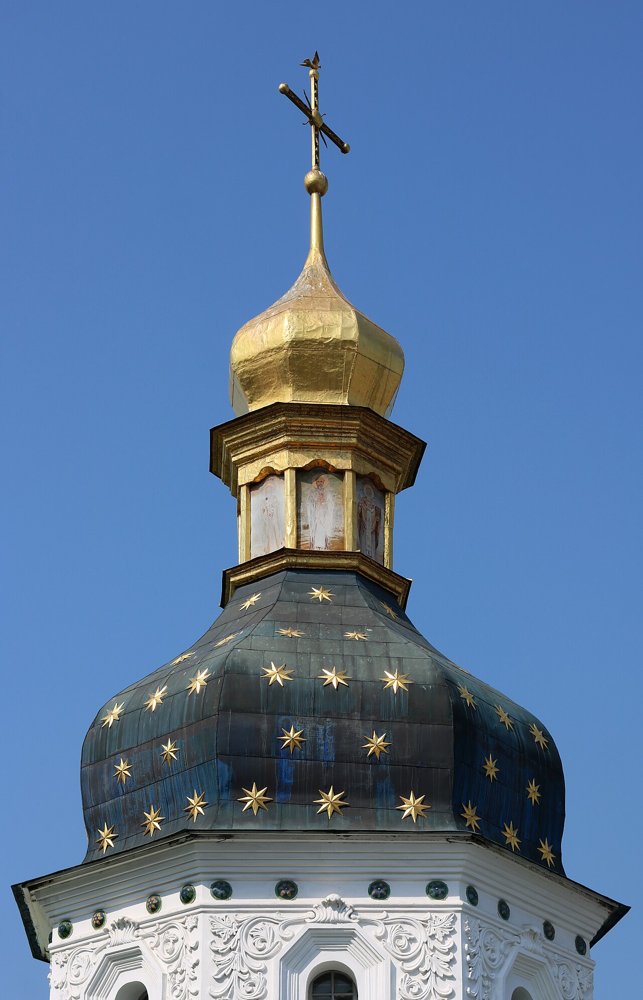
사진: George Chernilevsky · Public domain · Wikimedia Commons 키이우 페체르스크 라브라Києво-Печерська лавра
11세기부터 발전한 정교회 수도원. 성 소피아와 함께 세계유산을 이룸; 2026년 6월 성모승천대성당 피해 UNESCO 보고.
-
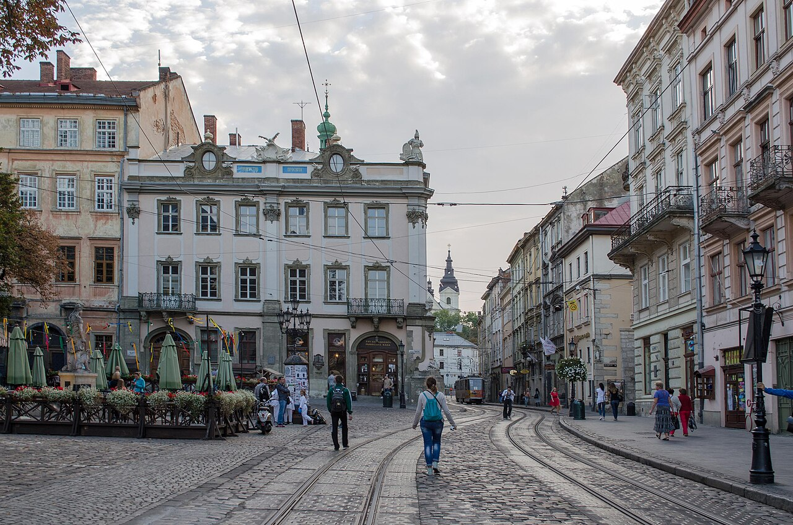
사진: Star61 · CC BY-SA 4.0 · Wikimedia Commons 리비우 역사 지구Історичний центр Львова
폴란드·오스트리아 등 다양한 중부유럽 도시문화를 보여주는 세계유산; 2023년부터 위험유산 목록.
-
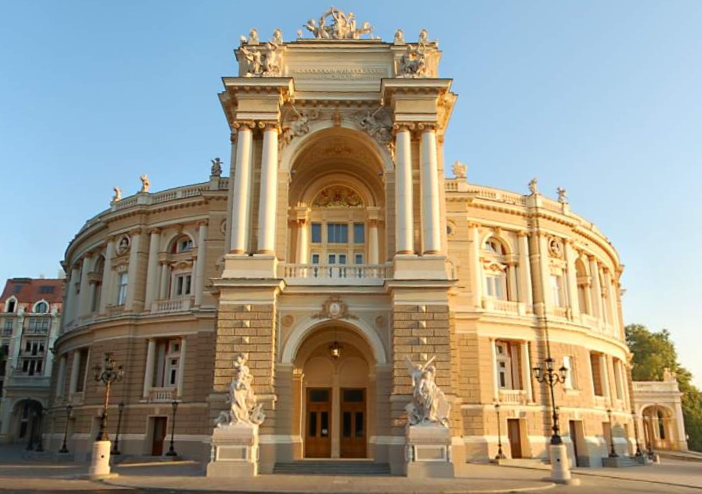
사진: Assedo · Public domain · Wikimedia Commons 오데사 오페라 극장·역사중심지Одеський національний академічний театр опери та балету
흑해 항만도시의 다민족 교역문화와 신고전주의·역사주의 건축유산; 오데사 역사중심지 2023년 세계유산.
-
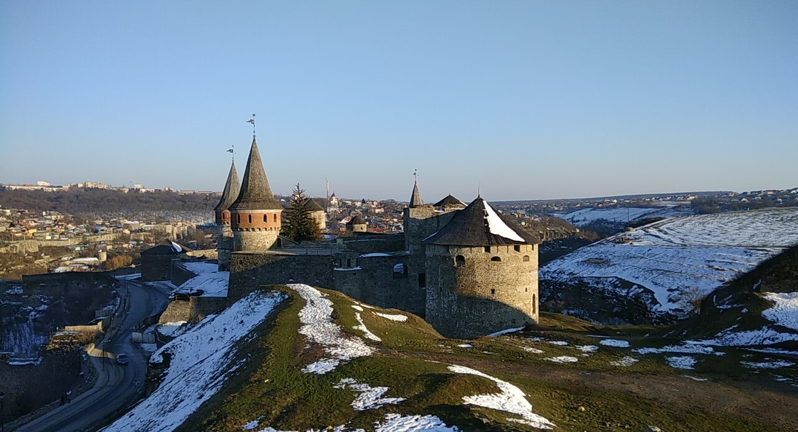
사진: Mikhail Petrische · CC BY-SA 4.0 · Wikimedia Commons 카미아네츠포딜스키 성Кам'янець-Подільська фортеця
교역로·강 협곡을 이용한 역사적 요새. 다양한 시대 성벽과 구시가지가 연결됨; 세계유산 확정 등재가 아님.
-
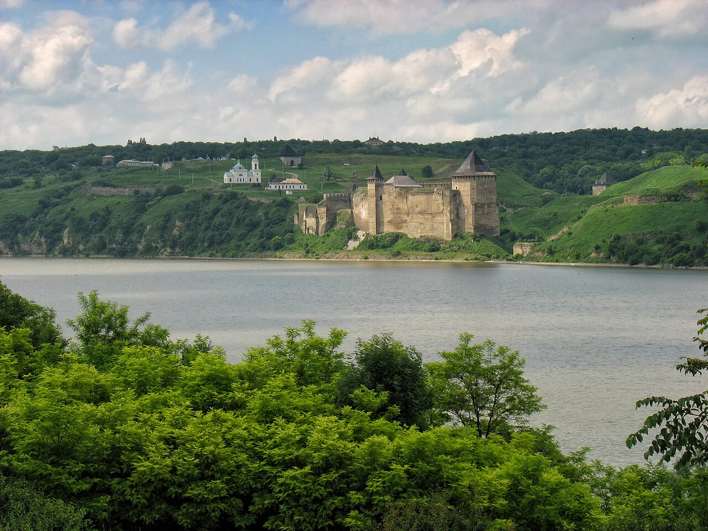
사진: Сергій Криниця (Haidamac) · CC BY-SA 3.0 · Wikimedia Commons 호틴 요새Хотинська фортеця
몰다비아 공국·오스만·폴란드-리투아니아 세력이 교차한 군사 요충지.
-
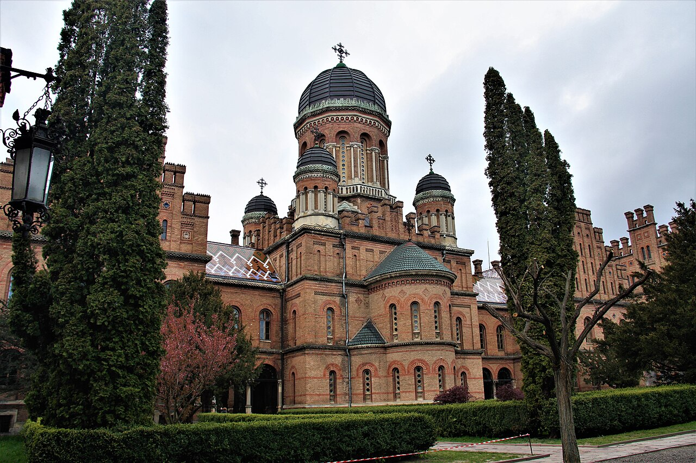
사진: Xsandriel · CC BY-SA 4.0 · Wikimedia Commons 체르니우치 대학교 옛 대주교 관저Резиденція митрополитів Буковини і Далмації
19세기 부코비나 종교·다문화 정체성과 연결된 건축 복합단지로 세계유산 등재.
-
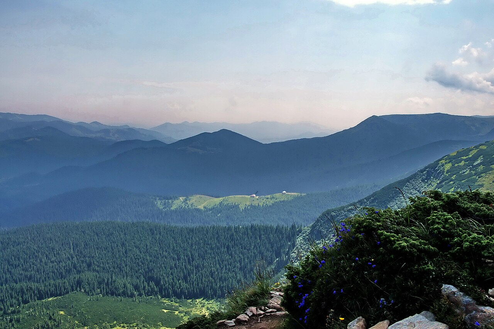
사진: Володимир Тертишник · CC BY-SA 4.0 · Wikimedia Commons 우크라이나 카르파티아산맥Українські Карпати
후출 공동체 전통·고산 초지·산악 생태가 특징; 일부 원시 너도밤나무 숲은 다국가 연속 세계유산.
-
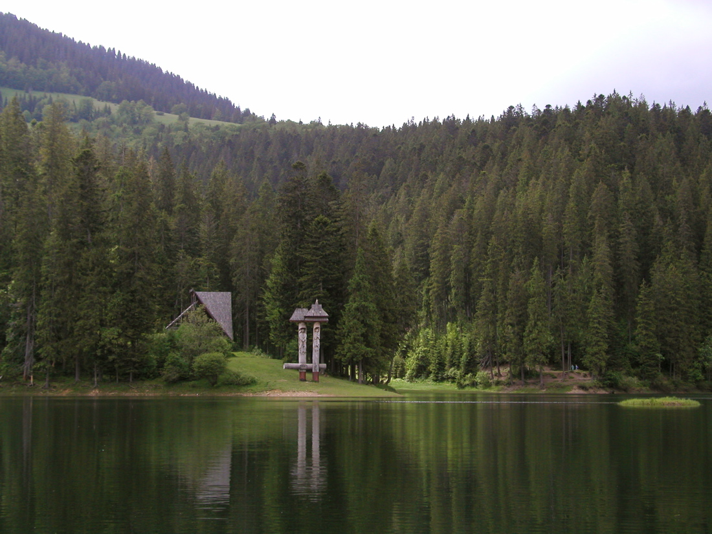
사진: VargaA · CC BY-SA 4.0 · Wikimedia Commons 시네비르 호수Озеро Синевир
카르파티아 지역의 대표 자연호수이자 국립자연공원 일대 생태교육 장소.
-
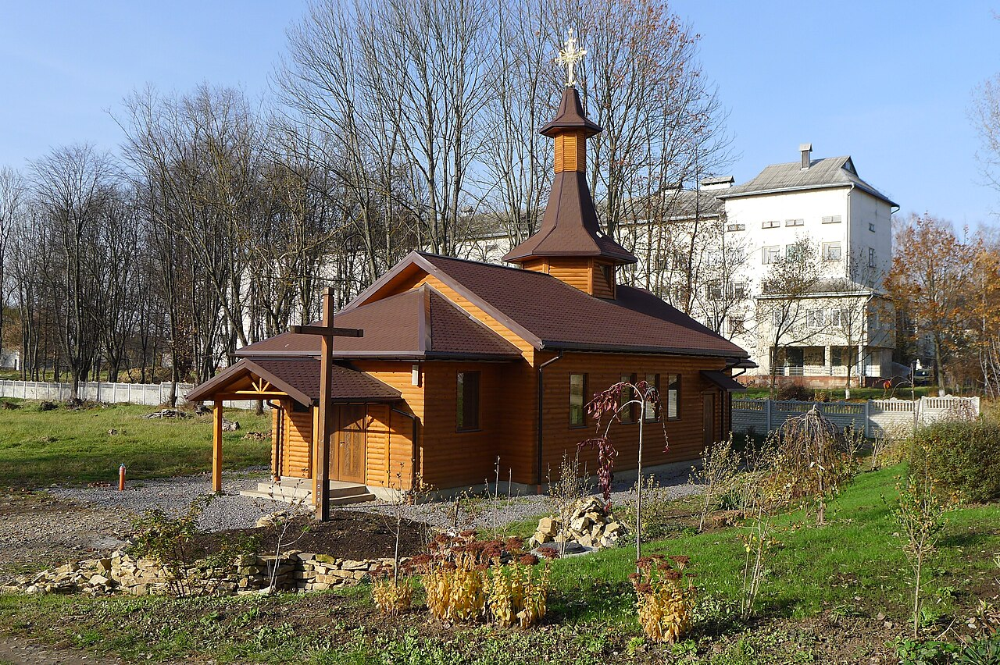
사진: Vesel · CC BY-SA 4.0 · Wikimedia Commons 카르파티아 목조 성당Дерев'яні церкви Карпатського регіону
폴란드와 공동 등재된 세계유산; 동방 교회 예식과 지역 목수기술의 결합.
-
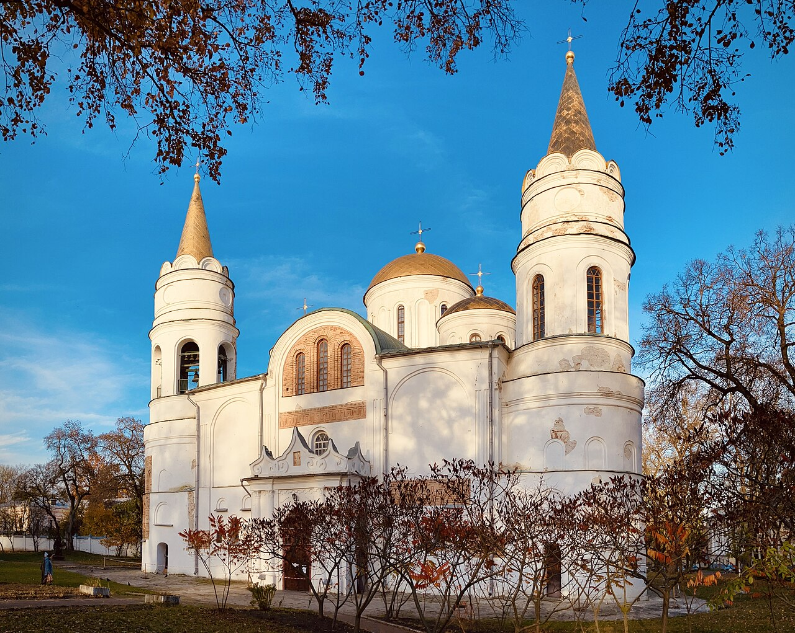
사진: Nomad0212 · CC BY-SA 4.0 · Wikimedia Commons 체르니히우 고대 성당군Чернігівські собори
키이우 루스 시대 건축과 지역 공국 역사 중심지; 역사중심지 관련 일부 유산 잠정목록.
-
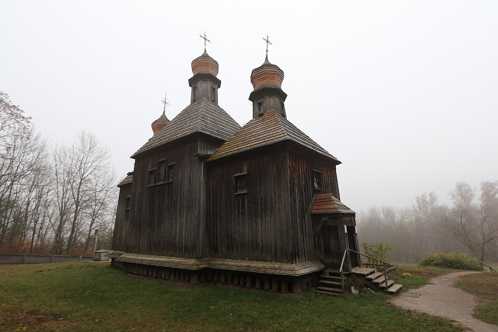
사진: Juan Antonio Segal from Madrid, Spain · CC BY 2.0 · Wikimedia Commons 피로히우 야외민속박물관Музей просто неба Пирогів
우크라이나 각 지역 목조가옥·농촌생활·지역복식을 비교하는 민속박물관.
-
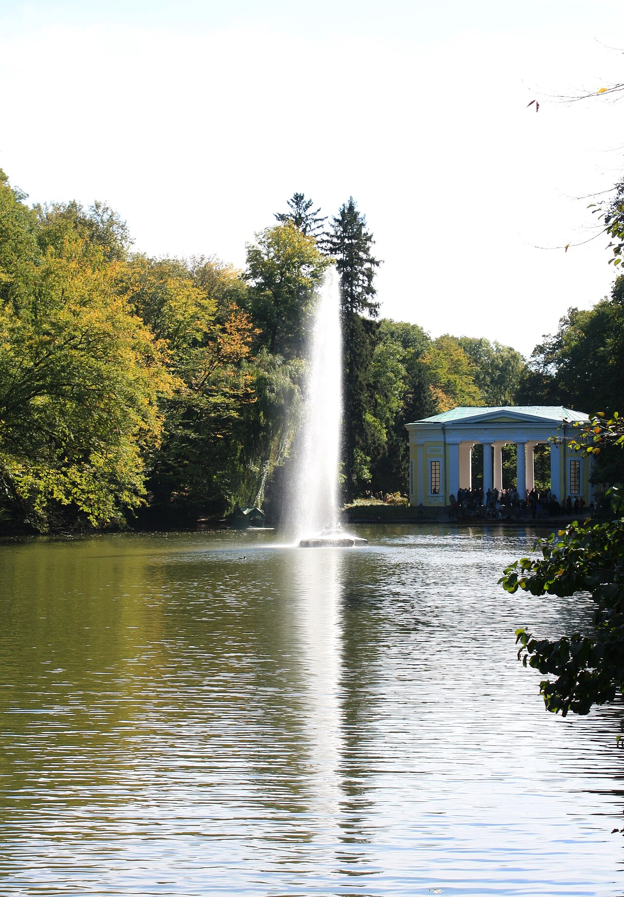
사진: Xsandriel · CC BY-SA 4.0 · Wikimedia Commons 우만 소피이우카 수목공원Софіївський парк
18세기 말부터 조성된 조경 문화유산; 귀족의 정원문화와 낭만주의 풍경.
-
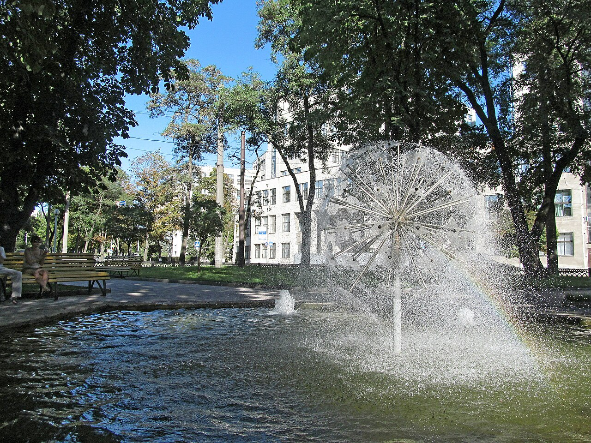
사진: Nadiya Li · CC BY-SA 3.0 · Wikimedia Commons 하르키우 자유광장·데르지프롬Держпром / Площа Свободи
1920년대 소련 건축사에서 중요한 구성주의 건축. 전쟁 피해를 입었고 보존 상황이 변동.
-
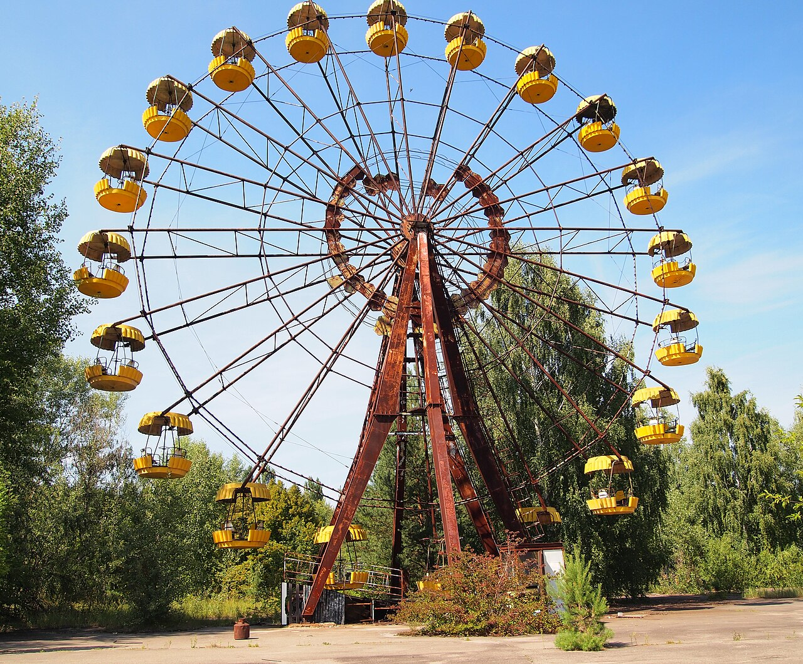
사진: Tiia Monto · CC BY-SA 3.0 · Wikimedia Commons 체르노빌 원전·프리피야트 기억공간Чорнобиль / Прип'ять
1986년 원전사고·환경오염·강제이주와 기술·사회적 기억을 설명.
여행 전에 확인하세요
운영시간·입장료·예약·개방 여부는 계절과 상황에 따라 바뀝니다. 방문 전에 각 명소의 공식 안내에서 다시 확인하세요. 카드의 "자세히 보기"에 참고한 출처를 적었습니다.
쇼핑·기념품
여행경보 안내 우크라이나 전 지역은 외교부 여행금지 국가입니다. 이 페이지는 우크라이나의 대표 상품과 공예 문화를 소개하는 내용이며 현지 여행·구매를 안내하지 않습니다. 일부 브랜드는 공식 온라인 판매를 하고 있습니다.
14개 추천 상품사진 5개 확보
우크라이나는 피산카·페트리키우카 같은 민속 예술과 리비우의 초콜릿·진저브레드 문화로 유명합니다. 전통을 현대 디자인으로 바꾼 독립 브랜드도 많습니다.
대표 TOP 3
카테고리별 전체 상품
카드를 누르면 자세한 설명·구매처·반입 유의사항·사진 출처를 볼 수 있습니다. 가격은 검증된 자료가 없어 싣지 않았고, 구매처는 2026.11.23 기준 정리라 바뀔 수 있습니다. 반입 규정은 관세청·농림축산검역본부 안내를 요약한 것으로 최종 판단은 입국 시 세관에서 합니다.